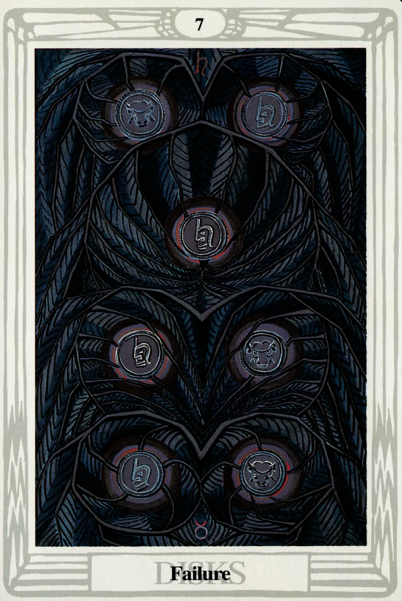

Disks
Seven of Disks
Failure

(Saturn in Taurus)
20° to 30° Taurus
May 11 to May 20
Original Title: Lord of Success Unfulfilled.
Golden Dawn Model: From clouds at the bottom of the card, a hand appears holding a rose branch. There are only five buds, which overhang, but do not touch the five uppermost disks. The disks are arranged thus:
Princess Scale for Netzach: Olive, flecked Gold.
The Four Scales for Saturn: Indigo; Black; Blue-black; Black, rayed Blue.
The Four Scales for Taurus: Red Orange; Deep Indigo; Deep warm Olive; Rich Brown.
Formula: 7 (Netzach) of Disks (Assiah) + Saturn in Taurus = FAILURE
This card presents an image of cold, stark beauty. That, I'm afraid, is the best thing that can be said about it. Try as I may, I can't find one kind word from Crowley concerning Failure. But honestly, have any of the sevens really thrilled us? We have to hand it to Lady Harris, though. She did a marvelous job of setting seven leaden coins (“They suggest bad money,” Crowleys explains.) struck with the symbols of Saturn and Taurus in a world of dead and blackened vegetation. They form the geomantic figure Rubeus, which Crowley describes as “the most ugly and menacing of the Sixteen.”
One look at our formula tells us we are in for trouble. Netzach, the sphere of dreamy-eyed prima donna Venus has, as Crowley puts it, “its customary enfeebling effect.” And cold, heavy Saturn, in slow, earthy Taurus adds jack-booted insult to unimaginative injury. Crowley summarizes the dark imagery of the card:
There is no effort here; not even dream; the stake has been thrown down, and it is lost. That is all Labour itself is abandoned; everything is sunk in sloth.
When the Seven of Disks shows up in a tarot reading, you better hope your question was “What's going to happen to my worst enemy?”